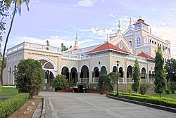

The Aga Khan Palace is a historically significant landmark located in Pune, India. Built in 1892 by Sultan Muhammed Shah Aga Khan III, the palace is famous for its architectural beauty and its connection to India's freedom struggle.
The palace was built to provide employment to the famine-stricken people of Maharashtra. Later, it gained historical importance as it served as a prison for Mahatma Gandhi, Kasturba Gandhi, Mahadev Desai, and Sarojini Naidu during the Quit India Movement in 1942. Kasturba Gandhi and Mahadev Desai passed away in this palace, and their memorials are located on the premises.
The Aga Khan Palace is an excellent example of Italianate architecture, featuring expansive corridors, spacious halls, arched windows, and lush gardens. The palace covers an area of 19 acres, including well-maintained lawns and a museum dedicated to Mahatma Gandhi.
The Aga Khan Palace is recognized as a national monument and serves as a memorial to Mahatma Gandhi and his philosophy of non-violence. It houses a collection of Gandhi’s personal belongings, including clothes, utensils, and photographs, offering a deep insight into his life.
Location: Pune, Maharashtra, India
Timings: 9:00 AM to 5:30 PM
Entry Fee: INR 25 for Indians, INR 300 for Foreigners
Best Time to Visit: October to March
Aga Khan Palace is easily accessible by road. Pune Airport is around 4 km away, and Pune Railway Station is about 5 km from the palace. Public transport and taxis are available for convenience.
For more details, visit these websites:
⬅ Back to Home